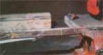

The Anyone-Can-Make-It ""Copperhead"" Survival Knife!
September/October 1983
by Martin J. Colburn
My first "copperhead" knife was born of necessity and chance-with, perhaps, just a little assistance from ingenuity-back in 1977. At the time, I was repairing and replacing cable along a railroad. In order to get to that heavy wire-which, for the most part, was buried under crushed stone and cinder-I had to make my way through the roots, limbs, and thorns of the abundant trackside brush.
As you can imagine, the insulation used on the cable had to be pretty sturdy to survive in that setting ... and I needed a tool that could strip off the insulation when I had to make a connection, and that could also cut through the briars and such surrounding the cable. Furthermore, since all of the cutting would be done very close to the wires that I was repairing, a chopping tool was out of the question. What I needed, it seemed, was a good, sturdy blade for stripping the cable and a small saw to clear the way ... and they both had to be able to tolerate getting jabbed into the gravel every now and again.
As it happened, chance stepped in. While I was walking along the track, I came across a broken power hacksaw blade ... discarded, no doubt, by a rail repair crew. Its teeth were in good shape, and the hard steel cut through saplings and roots easily, without seeming the worse for the abuse. It did, of course, need a handle. And I thought--as I headed home that evening with my find tucked in my back pocket-that if I could also give it a sharp edge for stripping cable, I'd have both of my "dream tools" in one.
I made the knife that same evening. It did the jobs I'd hoped it would, too. What's more, though my railroad repair days are over, I still get a lot of use from my copperhead. I've toted it along on fishing, backpacking, and prospecting trips and found that-in addition to being suited for the tool's original uses-the saw edge makes a -darn good fish scaler, and the hard steel blade is more than adequate for prying an occasional "promising" rock from the ground.
SHAPING THE BLADE
In order to make your own copperhead knife, you'll need a broken or used power hacksaw blade that's at least 10-1/21, long (check with machine shops, railroad repair gangs, or steel suppliers) ... about 2 feet of 3/4" type M soft copper tubing ... about 3 inches of 1/2" type M soft copper tubing ... a 3/4" "sweat type" copper cap ... some soldering flux and solder (either 50/50 or 60/40) ... a supply of steel wool or emery cloth ... a few wire coat hangers ... and a little shop time (I'd figure on about two hours).
First of all, you'll have to use a portable or bench grinder to shape the knife. Begin by drawing the grinding lines on the saw blade with a soapstone or wax pencil, following the plan in Fig. 1. Do note, too, that I shaped the blade in such a way that the rake of the sawteeth is toward the user. Some may take exception to this feature, but-believe me--I'd rather be pulling away from, and not pushing into, this tool in the event of a slip! You can save a considerable amount of grinding time if you just score along the outline of the blade with the edge of your grinding wheel, and then snap off the unwanted sections. (When shaping the blade, be sure to quench it often in a bucket of water, to avoid overheating the metal and removing its temper ... and when grinding, hammering, or soldering, always wear safety glasses or goggles.)
The tang, or inner handle, of the knife must also be formed. This can be done with some abandon, since it won't have to hold an edge and thus can be overheated without suffering too much harm. Once the blade has been shaped-but not sharpened-set it aside and go on to the next step.
GETTING A GRIP ON IT
As you may have guessed, the handle assembly (and the scabbard, which is described later) is responsible for the knife's being called a copperhead.
The hand guard (shown in Fig. 2) is made by flattening the small piece of 1/2" copper tubing in a vise. (Hardwood blocks or leather pads can be used, if necessary, to protect the copper's smooth finish from the vise's rough grips.) If you're forced to use rigid, rather than soft, tubing, you'll have to draw the temper out of it-by heating the material with a propane torch until the copper turns red, then allowing it to cool slowly-before using it to make the guard, handle, or sheath ... this process is called annealing. Now, mark the 7/8 " tang slot, shown in the drawing, and punch through that line with a cold chisel. With that done, clamp the hand guard in a vise, cut it to size, and round the corners with a file.
To make the handle itself, you'll first have to "sweat" the copper cap onto one end of the length of 3/4" tubing. (Again, if you're working with rigid copper, it'll be necessary to anneal the material before you attempt to shape it.) First, thoroughly clean the outside of the tube and the inside of the cap with emery cloth or steel wool. Next, apply flux to those surfaces that'll be in contact when the cap is slipped over the handle. Now, place the cap on the tube and twist it, to spread the flux evenly. At this point, you can clamp the tube in your visecap down-and begin to heat the cap while touching solder to the joint at a point op posite that being touched by the torch's flame. The joint between the cap and tubing will quickly fill with solder. As soon as a bright ring of the connecting material is showing completely around the joint, you can stop ... and wait until the joint has cooled before removing any excess solder with sandpaper. The handle can then be cut to its finished length of 4-1/2 ", cap included (the rest of the 3/4 " tubing will later be used to make the scabbard). Go on to remove any burrs from the cut area, and you'll be ready to assemble your copperhead knife.
THREE INTO ONE
The hand guard will, of course, have to be secured to the tang before the handle itself can be attached. Start by putting the blade, tang up, in a vise ... being careful to avoid squeezing the sawteeth, as that would ruin their "set" and limit their cutting ability. Now, clean and flux an area extending to an inch or so below the spot where the blade ends and the tang begins, and slide the hand guard over the tang until it butts up against the beginning of the blade.
You might have to "encourage" the strip of copper while doing this ... if so, use a combination of hammer and wooden block "buffer" to avoid denting the guard. When the two pieces fit together to your satisfaction, solder the hand guard to the tang, but not to the blade. After removing the joined components from the vise, place the handle in that tool horizontally, leaving the end of the cap outside of the jaws. Working slowly, squeeze the tubing slightly out of round, but only until its inner oval measures about 7/8" at the widest point. The handle then can be removed from the vise, and the blade can be reinserted as it was before. Now, once again using a wooden block to protect the copper, drive the handle over the tang until it touches the hand guard. Carefully solder the joint between these two copper parts, building up a 1/8 "fillet.
Once the knife has cooled, go on to bend the bottom of the hand guard a bit back toward the handle, and the top an equal amount in the direction of the blade. (It's best to put off sharpening the tool for a while longer if you plan to make a sheath, as you'll be handling the blade a good bit during that operation.)
WRAP IT UP
To make an attractive scabbard that won't be ripped to shreds by your knife's sawteeth, you'll need the rest of your 3/4 " copper tubing (the remaining section should be cut to a 16" length) and about eight 10" pieces of coat hanger wire. Use a wax pencil or similar marker to draw a line around the tube at a point 7 inches from one end . . . indicating the portion of the sheath that will actually cover the blade (the rest will undergo a bit of cutting and bending, and will serve as a belt loop). Then insert the hanger wires into the 7" "blade" section of the scabbard-they'll hang out about 3 inches, of course-and squeeze the entire 16" length of tubing in the vise. Work gradually, forming it into an oval first and then continuing to apply gradual pressure to avoid denting the material. When you're finished, you'll find that the lengths of coat hanger have prevented the "blade" section from flattening completely, leaving room for the knife to be inserted later.
Now, cut halfway through the flattened tube on the line that divides it into two sections ... then, as shown in Fig. 4A, make another cut extending from the top of that portion of tubing that'll form the belt clip
and intersecting the first cut (this will, of course, remove a section of tubing from the front of the scabbard, leaving a single thickness on the upper part and the double-thick 7" portion, with an opening for the blade below). With that done, make two 1/4" lateral cuts, again as shown in Fig. 4A, where the "blade" and "belt loop" sections of the sheath meet. Using your vise to hold the tubing, hammer these two long, 1/4"-wide panels back, forming a seam along both sides of the belt-clip-to-be. This adds rigidity to the material and also creates a smooth, nonsagging edge,
Your next step will be to trace the curve of the blade point on the appropriate section of the sheath (mark it on the front and on the back). Then-and this is probably the trickiest part of the operation-use your tinsnips to follow those curves, staying about 1/8" outside the tracings on what will be the back of the sheath and about 1/4" beyond the curved line on the front. This will leave a 1/8" lip on the front of the scabbard, and that can be peened over as indicated in Fig. 4B.
You can simply go on to shape the belt loop ... bending, cleaning, and soldering as indicated in Fig. 4C. Do take the time to flare out and roll the opening of the scabbard as shown, too. Insert your still-unfinished knife into the completed sheath to check it out. You may find that you have to hammer the scabbard along the edges-or wait until you've put a real edge on the blade-to get a perfect fit ... neither too loose nor too tight.
The knife's cutting surface will, of course, be roughed out on the grinder. Again, work slowly and cool the steel often to avoid damaging the temper of the metal, and grind into the blade rather than away from it, to avoid turning over a burred edge. When the blade is almost fully sharpened, finish the task with a good whetstone.
DRESS'ER UP
You can put a beautiful luster on all of the copper parts of your knife by buffing them on a wire wheel mounted to your grinder (emery cloth and elbow grease will do the job, too) ... and a coat or two of clear lacquer or varnish will preserve that shine. Furthermore, the soft metal is relatively easy to engrave, using an electric pen made for that purpose, a scribe, or even a hardened nail. You can create a facsimile of costly silver inlay by engraving the copper ... fluxing the grooves ... filling them with molten solder ... and then, once the solder has cooled, sanding the bright, silvery material off, leaving solder only in the grooves of the engraving. (Again, take the time to protect your handiwork with clear lacquer.)
CONGRATULATIONS!
That's about it! You've taken a handful of all-but-useless junk and turned it into a beautiful and practical tool. Now the copperhead knife is a bit crude when compared with many of the fine factory- and custommade blades on the market today, but--given reasonable care-it'll do most anything its expensive cousins will ... for years to come. And every time you use the tool you'll be able to savor the pride and satisfaction of doing a job with an implement that you made yourself ... and I don't think there's any way to put a price on that feeling.
 [1] Cutting away half of the tube to form the belt loop.[2] Solder secures the loop at its base. [3] The finished scabbard. [4] The copperhead, a knife of many uses. For those of you who find the idea of making a knife thrilling, but are intimidated by the expensive shop tools and extensive metalworking knowledge required... here's the answer. |
 LEFT: When the scabbard is flattened, the blade (B) and loop (L) sections are compressed to different degrees, because these pieces of coat hanger keep the former from closing fully. |
|
|
|
|
|